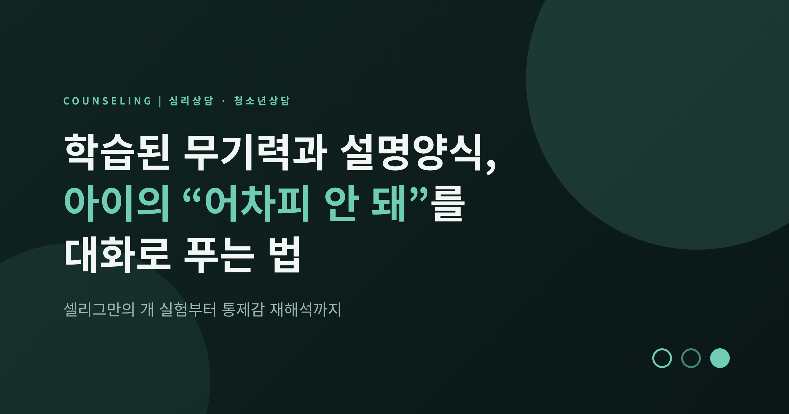
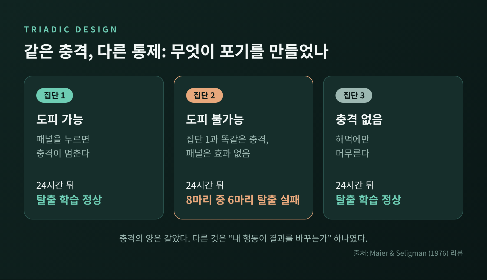
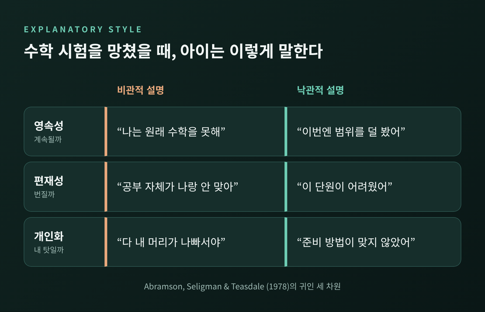
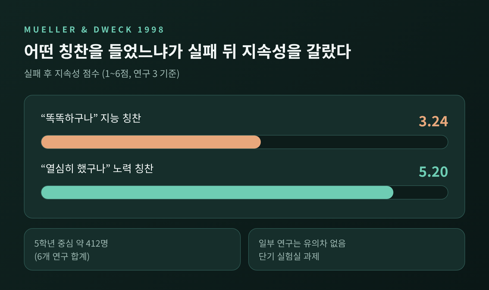
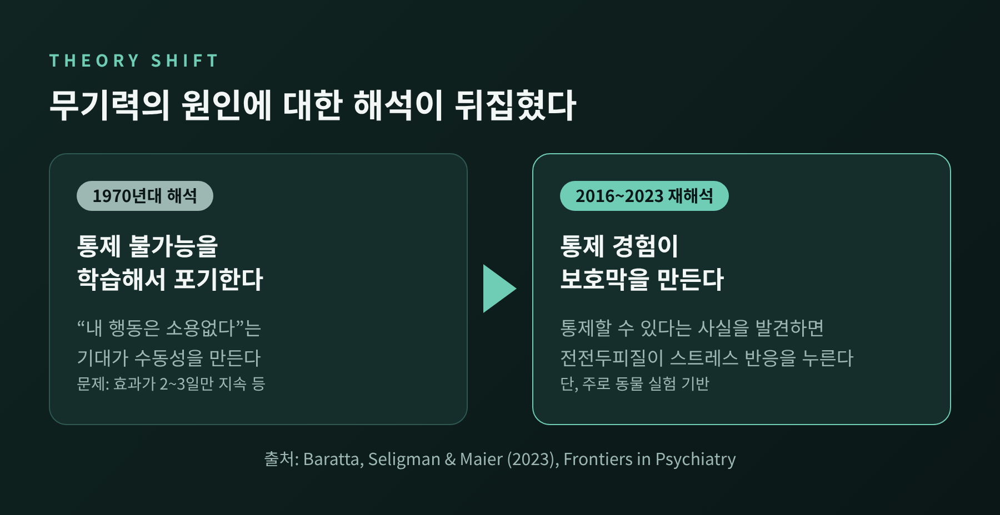
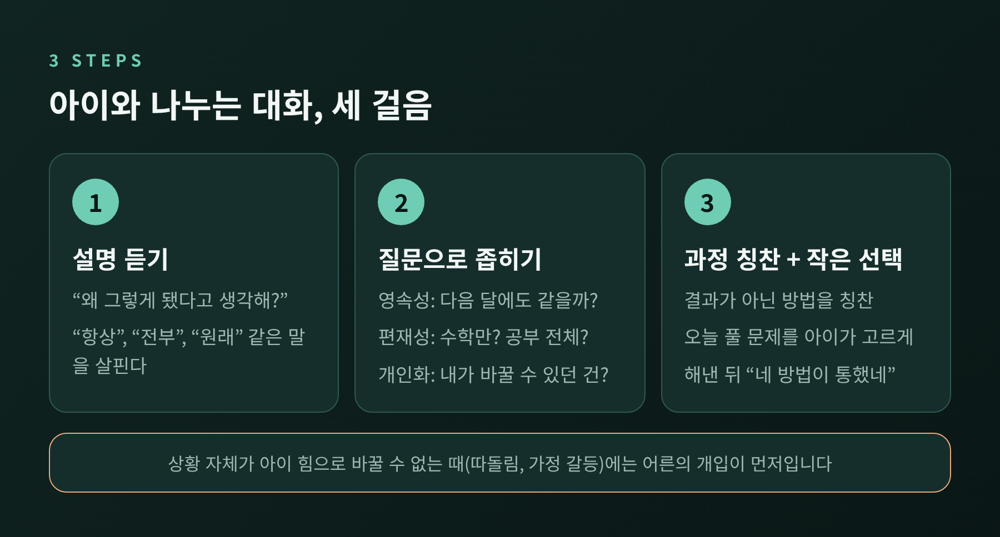

이번 글에서는 셀리그만의 학습된 무기력 이론과 설명양식을 정리하고, 아이와 청소년의 학습 장면에서 이를 어떻게 대화로 옮길 수 있는지 살펴보겠습니다. 핵심은 실패 그 자체보다 "통제할 수 없었다"는 경험, 그리고 그 경험을 어떻게 설명하느냐입니다. 후속 연구가 이론을 어떻게 뒤집었는지, 그리고 이 접근에 어떤 한계가 있는지도 함께 다룹니다.
1960년대 후반, 셀리그만과 마이어는 개를 세 집단으로 나누어 실험했습니다. 첫 번째 집단은 패널을 눌러 충격을 끌 수 있었습니다. 두 번째 집단은 첫 번째 집단과 똑같은 횟수와 길이의 충격을 받았지만, 무엇을 해도 충격은 끝나지 않았습니다. 세 번째 집단은 충격을 받지 않았습니다.
하루 뒤, 모든 개를 낮은 장벽만 넘으면 충격을 피할 수 있는 상자에 넣었습니다. 1976년 마이어와 셀리그만의 리뷰에 따르면, 통제할 수 없는 충격을 받았던 집단은 유의하게 느렸고 여덟 마리 중 여섯 마리는 아예 탈출하지 못했습니다. 많은 개가 그 자리에 누워 낑낑거렸다고 전해집니다.
충격의 양은 두 집단이 같았습니다. 달라진 것은 하나, 내 행동이 결과를 바꿀 수 있었느냐였습니다. 저자들은 "충격 자체가 아니라 충격을 통제할 수 없다는 사실이 반응 실패를 낳았다"고 정리했습니다. 이것이 학습된 무기력의 출발점입니다.

사람은 개와 다릅니다. 같은 실패를 겪고도 다시 일어나는 아이가 있고, 주저앉는 아이가 있습니다. 1978년 에이브럼슨, 셀리그만, 티즈데일은 그 차이를 '설명양식'으로 풀었습니다. 나쁜 일의 원인을 어떻게 설명하느냐가 무기력의 깊이를 정한다는 것입니다.
설명양식에는 세 축이 있습니다.
수학 시험을 망친 중학생을 떠올려 보시기 바랍니다. 비관적으로 설명하는 아이는 "나는 원래 수학을 못해(영속), 공부 자체가 나랑 안 맞아(편재), 다 내 머리가 나빠서야(개인화)"라고 말합니다. 낙관적으로 설명하는 아이는 "이번엔 범위를 덜 봤어(비영속), 이 단원이 어려웠어(특정), 준비 방법이 맞지 않았어(상황)"라고 말합니다. 점수는 같아도 다음 행동은 전혀 다릅니다.

피터슨과 셀리그만이 1984년 논문에서 정리한 연구를 보겠습니다. 초등학교 3~6학년 96명을 6개월 간격으로 두 번 조사했습니다. 나쁜 일을 비관적으로 설명하는 정도와 우울 증상의 상관은 r = .51이었습니다. 처음 조사에서 비관적이었던 아이는 초기 우울 수준을 감안하고도 6개월 뒤 우울 증상이 더 높았습니다(부분상관 .26).
다만 신중해야 할 부분이 있습니다. 저자들도 측정 도구의 신뢰도가 낮은 편이라고 밝혔습니다. 1986년 놀런-획스마 등이 학령기 아동 168명을 1년간 추적한 연구에서는 방향이 한쪽으로만 흐르지 않았습니다. 비관적 설명양식이 우울을 예측했지만, 우울 역시 이후의 설명양식을 예측했습니다. 생각이 기분을 만들고, 기분이 다시 생각을 만드는 순환에 가깝습니다.
학습 장면에서는 드웩의 연구가 자주 인용됩니다. 뮬러와 드웩(1998)은 5학년 중심의 아동에게 퍼즐 성공 뒤 "똑똑하구나"라고 칭찬하거나 "열심히 했구나"라고 칭찬했습니다. 이어 어려운 문제에서 실패하게 했더니, 지능 칭찬을 받은 아이들은 실패 후 지속성 점수가 한 연구에서 3.24점, 노력 칭찬 집단은 5.20점(6점 만점)이었습니다. 지능 칭찬 집단은 실패를 낮은 능력 탓으로 돌리는 경향도 높았습니다. 칭찬 한마디가 설명양식을 바꿀 수 있다는 뜻입니다. 다만 여섯 개 연구 가운데 일부 결과는 유의하지 않았고, 단기 실험실 과제였다는 점은 감안해야 합니다.

처음 이론은 이렇게 설명했습니다. 동물이 "내가 무엇을 해도 소용없다"는 것을 배우고, 그 학습이 수동성을 만든다고 보았습니다. 그런데 50년 가까이 지난 뒤 같은 연구자들이 해석을 바꿨습니다.
2016년 마이어와 셀리그만은 「Learned helplessness at fifty」라는 논문에서 신경과학 근거를 들어, 통제가 있다는 사실이 발견되고 학습되어야 한다는 방향으로 논의를 옮겼습니다. 2023년 바라타, 셀리그만, 마이어의 리뷰는 이를 더 분명히 합니다. 길게 이어지는 혐오 자극이 뇌 깊은 곳(등쪽 솔기핵)의 세로토닌 뉴런을 강하게 자극해 무기력을 낳고, 통제할 수 있다는 경험이 전전두피질을 통해 그 반응을 눌러 준다는 설명입니다. 저자들은 "우리의 견해는 원래 견해와 정확히 반대"라고 적었습니다. 무기력을 학습하는 것이 아니라, 통제의 경험이 보호막을 만든다는 것입니다.
아이를 돕는 입장에서 이 변화는 의미가 큽니다. 포기하는 마음을 "고쳐야 할 생각"으로만 보지 않고, "작게라도 내가 바꿀 수 있다는 경험이 부족했던 상태"로 볼 수 있기 때문입니다. 단, 이 결과는 주로 쥐 실험에서 나왔고 저자들도 사람에게 옮기는 것은 추측이라고 밝혔습니다. 상담 현장의 처방으로 곧바로 쓸 수는 없습니다.

가정에서나 상담실에서 적용할 수 있는 순서를 세 단계로 정리해 보겠습니다.
첫째, 아이의 설명을 먼저 들어 봅니다. "이번 시험 어땠어?"가 아니라 "왜 그렇게 됐다고 생각해?"라고 묻습니다. 아이의 설명양식은 말투 속에 이미 드러납니다. "항상", "전부", "나는 원래"라는 단어가 반복되는지 살펴보시면 됩니다.
둘째, 세 축을 하나씩 좁혀 줍니다. 반박이 아니라 질문으로 합니다.
셋째, 칭찬은 결과가 아니라 과정에 둡니다. "머리가 좋네"보다 "틀린 문제를 다시 풀어 본 방식이 좋았어"가 낫습니다. 드웩의 연구는 아이가 자신의 지능을 고정된 것으로 받아들이는 순간, 어려움이 곧 능력 부족의 증거가 된다고 보았습니다. 다만 실제 실력을 부풀려서 칭찬하라는 뜻은 아닙니다.
재해석된 이론을 반영하면 순서가 하나 더 붙습니다. 위 대화에 앞서, 아이가 직접 해 보고 결과가 달라지는 경험을 아주 작은 단위로 만들어 주는 것입니다. 오늘 풀 문제를 아이가 정하게 하거나, 어제보다 한 문제만 더 풀어 보게 하는 정도면 충분합니다. 해낸 뒤에 "네가 선택한 방법이 통했네"라고 짚어 주면 통제감이 말로 연결됩니다.

세 가지를 말씀드리고 싶습니다.
첫째, 대화 기법만으로 충분하지 않은 경우가 많습니다. 무기력의 배경에 우울, 불안, 학교 내 관계 문제, 집 안의 갈등, 학습 환경 문제가 있다면 설명양식 교정은 일부에 그칩니다.
둘째, 효과 크기가 크지 않습니다. 설명양식과 인지 기법을 가르치는 펜 회복탄력성 프로그램은 초등 고학년~중학생 대상으로 널리 연구되었습니다. 2009년 메타분석(통제 연구 17건, 2,498명)에서는 우울 증상 감소 효과가 있었지만 효과 크기가 0.11~0.21로 작았고, 능동적 대조 조건보다 낫다는 증거는 확인되지 않았습니다.
셋째, 긍정적으로만 바꾸라는 뜻이 아닙니다. 실제로 아이가 통제할 수 없는 상황, 예컨대 가정 문제나 따돌림 속에서 "네가 노력하면 돼"라고 말하는 것은 오히려 상처가 됩니다. 이때 필요한 것은 설명을 바꾸는 일보다 상황 자체를 바꾸려는 어른의 개입입니다.
정리하면 이렇습니다.
"아이를 무기력하게 만드는 것은 실패가 아니라, 바꿀 수 있는 것이 없었다는 경험입니다."
설명을 다듬는 일도 필요합니다. 그러나 그보다 먼저, 아이 손에 작은 선택권을 되돌려 주는 일이 앞서야 한다고 생각합니다. 어제 포기한 아이에게 오늘 한 문제를 고르게 하는 것, 아마 그 정도에서 시작해도 충분할 것입니다.
아이의 포기가 몇 주 이상 이어지거나, 식욕과 수면의 변화, 등교 거부, 지나친 자책이나 "사라지고 싶다"는 말이 보인다면 가정 안의 대화만으로 버티지 마시고 청소년상담복지센터, 학교 상담실, 정신건강의학과 등 전문 상담 기관에 상담받으시길 권합니다. 이 글은 일반적인 정보를 전하는 것이며, 개별 상황에 대한 진단이나 치료를 대신하지 않습니다.